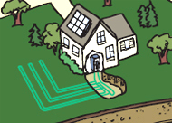
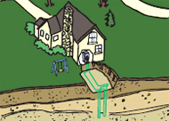
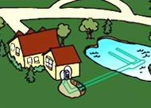
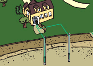

Геотермальная энергия для отопления дома или дачного участка

В течение года практически 50% солнечной энергии поглощает земная поверхность, которая на глубине чуть больше полутора метров имеет постоянную температуру. Геотермальная технология использует этот постоянный неисчерпаемый источник энергии следующим образом: в земле на глубине примерно 1,8 метра прокладываются батареи змеевиков, соединенных с насосом и теплообменным устройством. Эта несложная конструкция дает возможность выгодно использовать природную способность земли принимать и отдавать тепло, и круглый год поддерживает постоянную температуру у вас в доме.
Раствор экологически чистого антифриза или обычная вода с помощью насоса переносит энергию по системе змеевиков на теплообменник, находящийся у вас в доме. Зимой эта система работает как обогреватель, распространяя тепло по помещениям, а летом она может заменить кондиционер, поглощая тепло из помещений. В летнее время нагретая таким образом жидкость может использоваться для бытовых нужд, либо снова охлаждаться в земле по системе змеевиков.
Применение геотермальных технологий имеет
два неоспоримых преимущества: они подарят вам не только комфортную
температуру в доме круглый год, но и снабдят дешевой горячей водой,
дополнив или заменив полностью домашний водонагреватель. Эта технология
работает на 30% эффективнее существующих систем отопления, и на 70%
опережает привычные системы кондиционирования и вентиляции
Не важно, в какой стране и городе вы живете, геотермальная система будет работать в любом доме при любых климатических условиях!
Существует несколько вариантов установки змеевиков. Змеевики изготавливают из специальной пластиковой трубы высокой плотности (PE100).

1.Горизонтальная установка - это наиболее распространенный метод проведения труб, его применяют в сельской местности и на дачных участках, так как он занимает определенную территорию. На участке роют несколько траншей, не более 2 метров в глубину и около 90 метров длиной. В траншею размещают змеевик, а затем засыпают ее землей.
2.Вертикальная установка преимущественно используется в городской местности, поскольку она не требует большой площади. В этом случае в земле бурят скважины глубиной от 50 до 150 метров, трубы вводят в скважины и бетонируют.
3.Змеевики в пруду или озере. Если рядом с домом есть подходящий пруд глубиной около 2,5 метра, система змеевиков может быть расположена на дне такого водоема. От дома к воде роют одну траншею, в которую закладывают, как правило, две трубы. Эти трубы соединяются на дне водоема с несколькими другими трубами.
4.Разомкнутые змеевики. Этот вид успешно применим на участках с колодцами. Грунтовые воды из подземного водоносного слоя закачиваются насосом в дом, проходят через теплообменник и возвращаются обратно в колодец.Использование геотермальных технологий абсолютно безопасно для окружающей среды, установка одной системы в обычном доме эквивалентна высадке 750 деревьев, или удалению с дорог двух автомобилей, загрязняющих воздух, потому что система не выделяет в атмосферу углекислый газ, влекущий за собой парниковый эффект и глобальное потепление. Кроме того, ученые подсчитали, что существующие системы экономят более 14 миллионов баррелей сырой нефти ежегодно, и сокращают потребность в усилении тепловых электростанций благодаря низкому потреблению электричества.